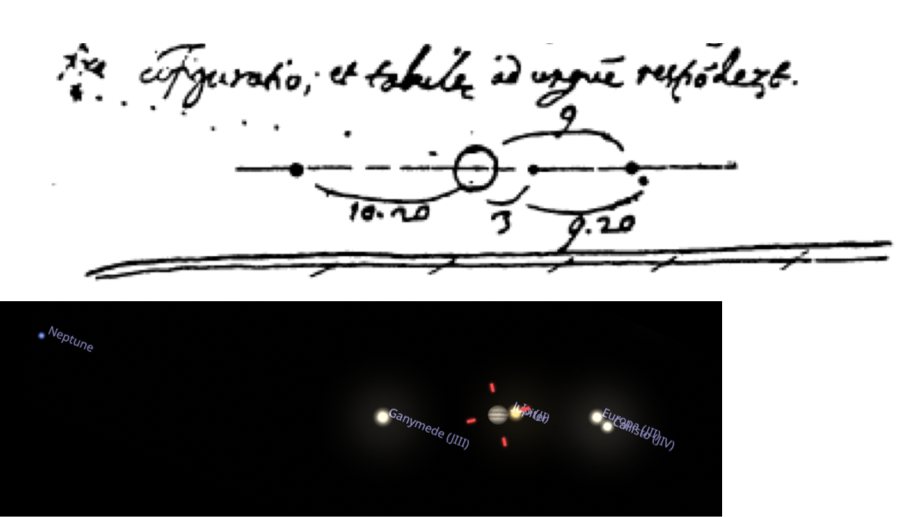
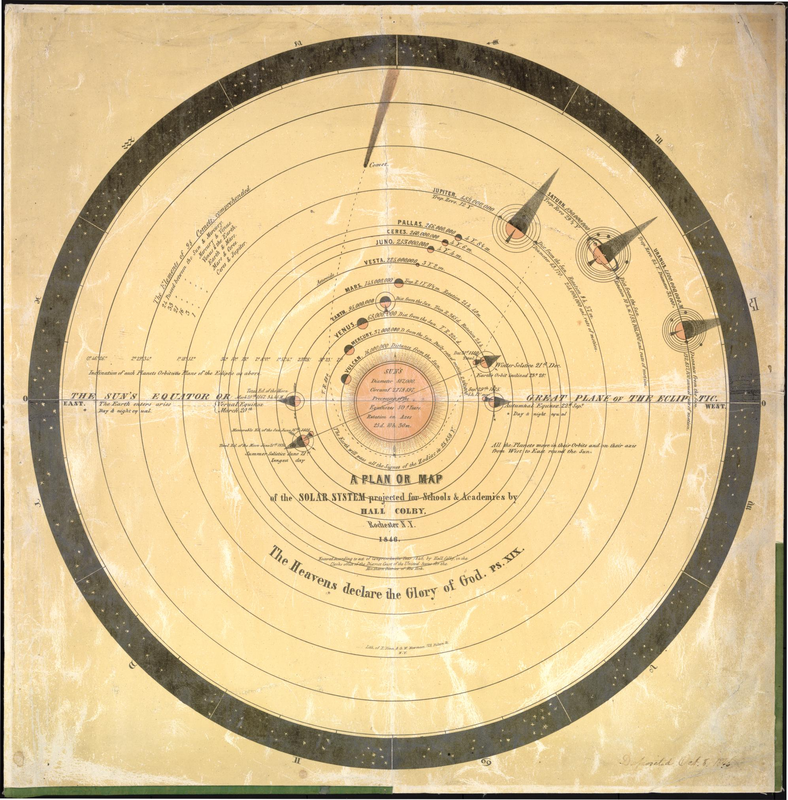
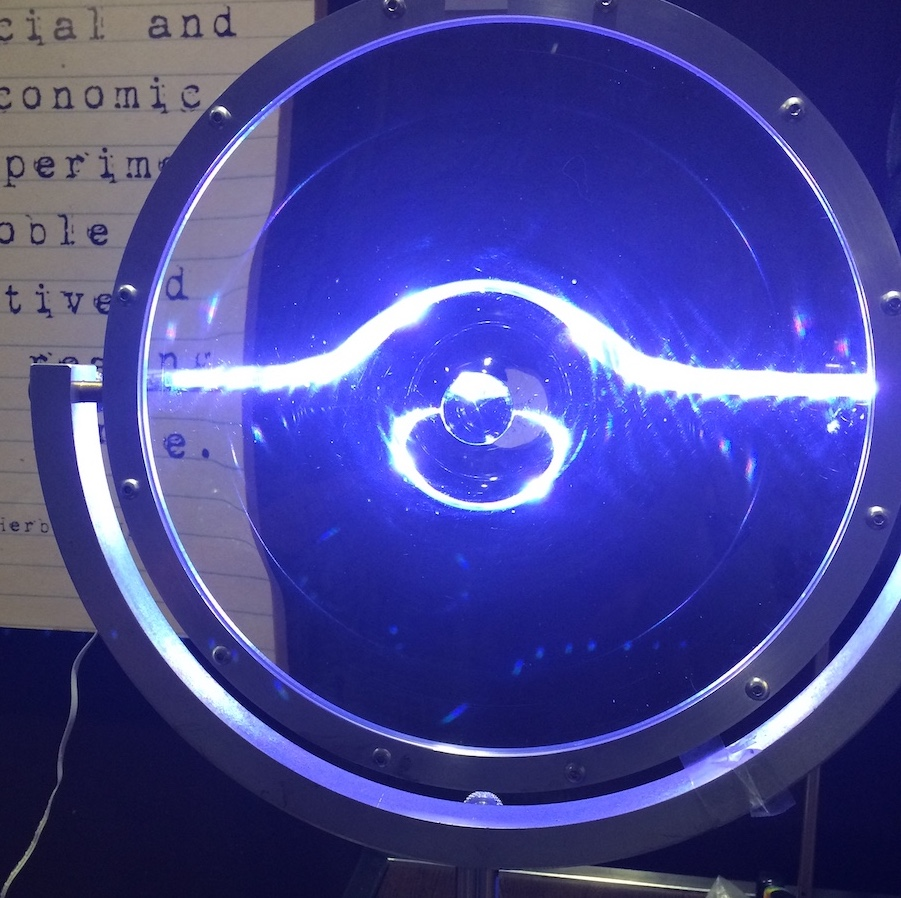
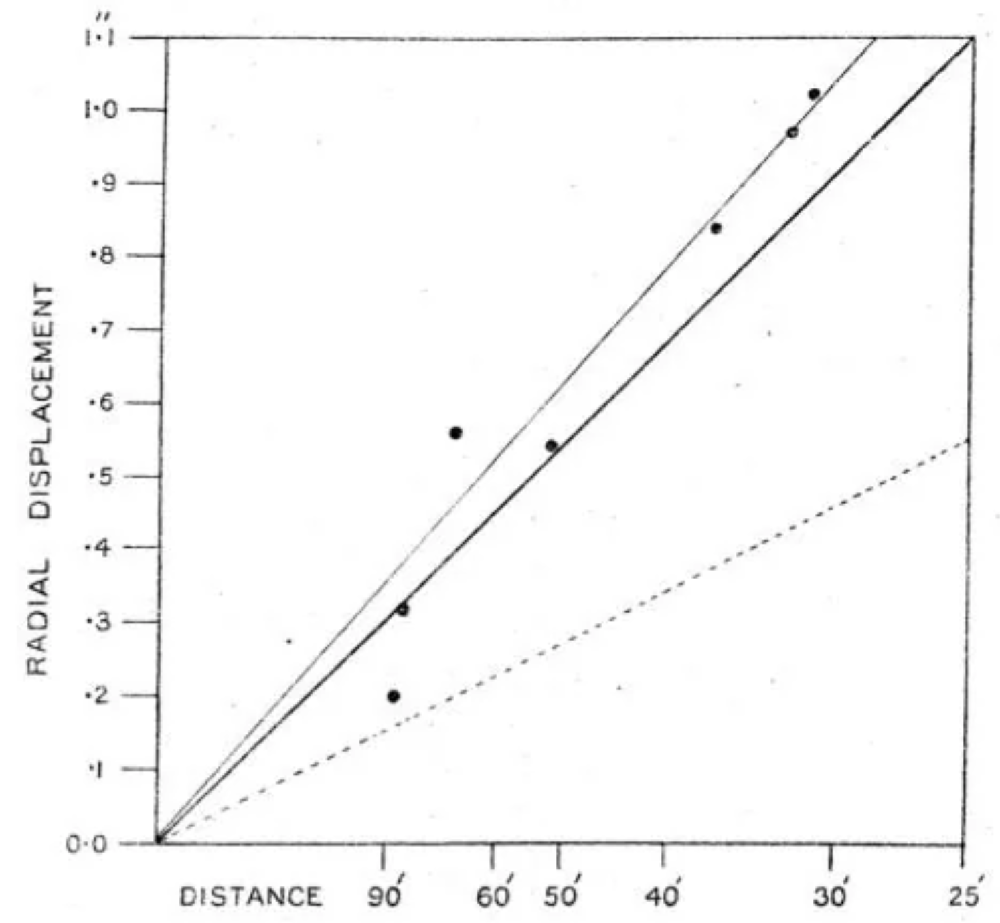
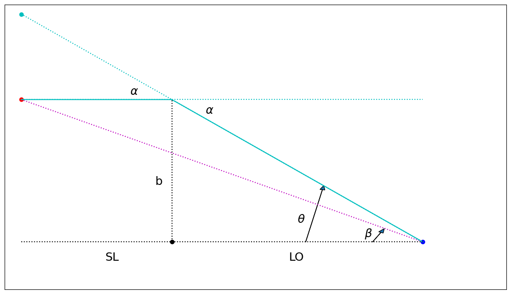
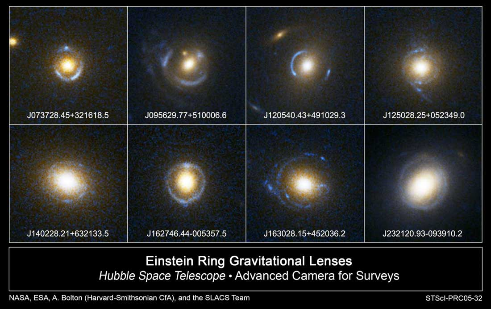
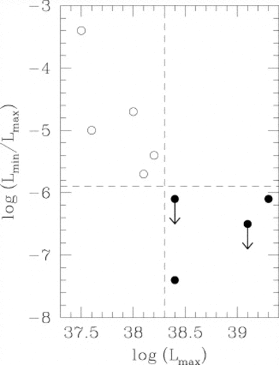
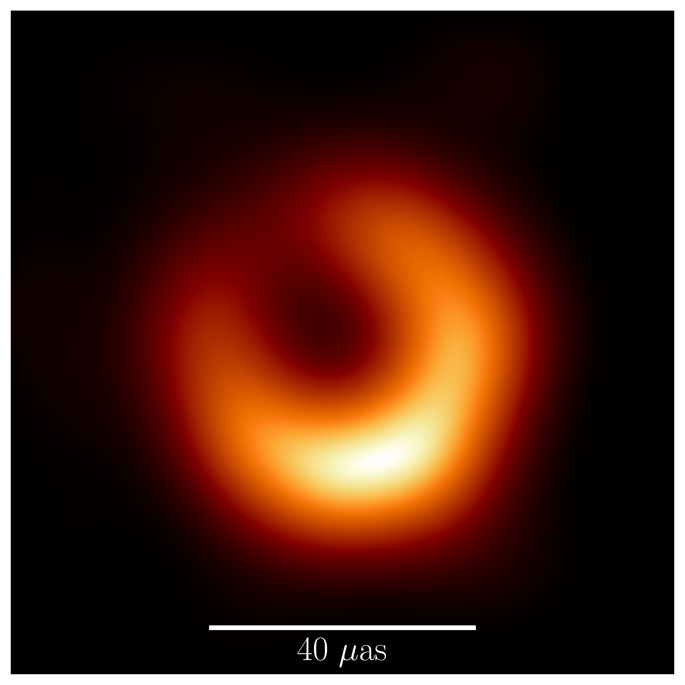
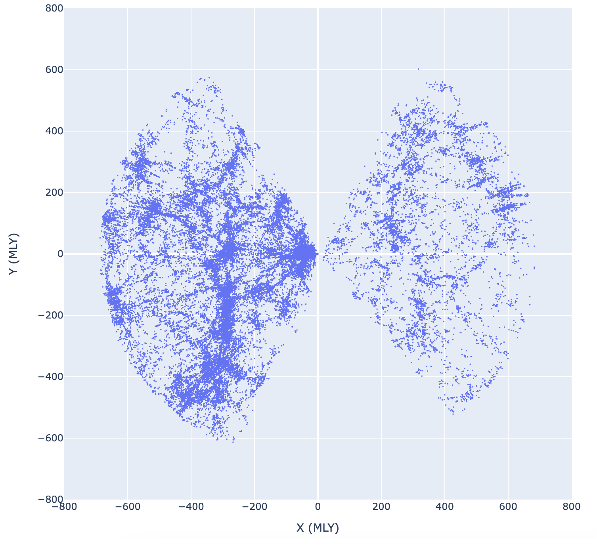
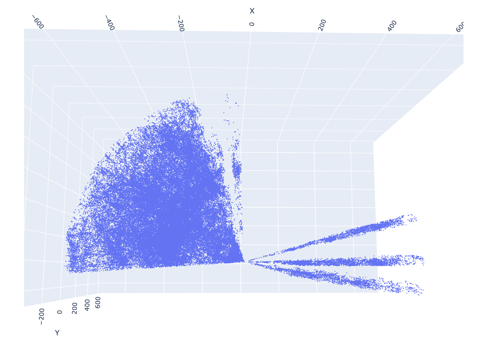

14. Some Applications of General Relativity#
14.1. Mercury’s Orbit#
General Relativity demands a complete reconceptualization of how gravity works. Why go to so much effort? What about Newtonian gravity is so inadequate as to merit such a radical move? Well, as successful as Newton’s gravity was, it was not without its critics. Leibnitz, for example, was never satisfied that Newton provided no mechanism by which two objects in space might exert forces on each other. How does the Earth “know” where the Sun is, that it should be pulled in the right direction? Leibnitz suggested the intervening space might be filled with some kind of vortices to mediate the interaction, but such vortices were never found, and the success of Newtonian gravity in mapping the orbits of the comets and planets convinced everyone of its utility.
In fact, in the mid-19th century, Newtonian calculations were successful in predicting the location of a new planet that no one hitherto had known was there. Careful measurements of the movement of Uranus showed that it was not following the predictions of Newtonian calculations, unless there was an unknown object out there exerting forces on it that were not being accounted for. Laborious calculations from two different people, independently, predicted where this unknown object should be, and the planet Neptune was discovered in a location consistent with their predictions.
Note
Although German astronomer Johann Gottfried Galle is rightly credited with discovering Neptune in 1846, he is actually not the first person to observe the planet. That honor goes to none other than Galileo Galilei, who in 1612 was tracking the movement of the moons of Jupiter.
Fig. 14.1 shows a scan from Galileo’s observing notebook, which he sketched on the night of 27 Dec 1612. It shows Jupiter in the middle, with three moons to the right and a single moon to the left. He also included a background star, above and to the left, or so he thought. If you take a planetarium application and set the date to 27 Dec 1612, you can scan through the night to discover exactly when the moons line up with Galileo’s drawing, and you will see that the nearby “star” is actually Neptune!
{kind=link}

Fig. 14.1 Above is a sketch from Galileo’s observing notebook on the night of 27 Dec 1612. The dotted line leads to a nearby star that Galileo was using as a reference, but back extrapolation shows that this “star” was actually, unbeknownst to anyone at the time, the planet Neptune! Below is a screen grab from the planetarium program Stellarium set to just before midnight on that night. You can see the moons we now call the Galilean moons, labelled left to right: Ganymede, Io, Europa, and Callisto. Off to the left, and slightly above, right where Galileo drew a dot, is Neptune.#
By the mid-19th century, it was becoming clear that Mercury did not orbit strictly as Newtonian gravity said it should, either. If you ignore the other planets and just consider the force from the Sun (being the largest and closest body to Mercury, this is not unreasonable), Newtonian gravity would predict that Mercury should travel in an elliptical orbit. However, Mercury moves as if its ellipse is drifting around the Sun: when Mercury returns to the point of its ellipse that is closest to the Sun, the perihelion, that point is not in the same place it was at the previous orbit. The measured drift of the perihelion is about 566\(^{\prime\prime}\) per century. Mercury takes about three months to complete one orbit, so in a single orbit, the location of one perihelion only differs by about one and a half arcseconds from the previous one. That is a tiny change (one arcsecond being 1/3600th of a degree, or about a tenth the thickness of a sheet of paper held at arm’s length).
Some of this shift could be explained by the effects of the other planets, dominated by Jupiter, tugging on Mercury from other directions. Careful calculations (before electronic computers!) added up to a prediction of 523\(^{\prime\prime}\) per century. This is not a large discrepancy – the difference is only 43 seconds of arc every century – but that was enough to be measured. Scientists at the time thought that since the prediction of Neptune was so successful, perhaps there was another planet inside Mercury’s orbit that was not being accounted for in the calculations. This hypothetical planet was dubbed Vulcan, and for over 50 years, astronomers tried to find it. Fig. 14.2 shows the orbit of Vulcan, as factual as all the other orbits.
{kind=link}

Fig. 14.2 Solar System map produced for education in 1846. The planet Vulcan is shown as orbiting closer to the Sun than Mercury. See Library of Congress for more details.#
How does GR help us understand this result? First of all, if the Sun were the only body exerting a force on Mercury, and if Newton’s Gravitational Law were completely accurate, the orbit would be 100% determined by that \(1/r^2\) law. Solutions of that equation must be functions that are called “conic sections.” They must be either closed elliptical orbit trajectories or open fly-by paths that swing around once and never come back. Fig. 14.3 shows three of the four possible ways that a plane can intersect with a cone, illustrating the circular (green), elliptical (blue), and parabolic (red) trajectories. The hyperbolic trjectory is omitted to keep the figure from getting too crowded, but if you tilt the red plane to make the intersection wider, that would yield the hyperbolic solutions.
Fig. 14.3 Illustration of the paths in a \(1/r^2\) centrally pointing force field. The shapes formed where the planes cross the cone are the possible trajectories. Rotate the image to get a better view. The red plane makes a parabolic (unbound) trajectory, while the green and blue planes make circular and elliptical orbits, respectively. The precession of the orbit of Mercury is interpreted in GR as an effect of the shape of spacetime around the Sun causing gravity to deviate from the Newtonian \(1/r^2\) shape, and therefore causing Mercury’s orbit to deviate from the simple conic section.#
Without delving too deep into the details, the correspondence principle says that in the limit of weak gravity, the trajectories of objects under the influence of an object like the Sun will follow paths as predicted by Newton’s Gravitational Law. It is only near the Sun, where the gravity gets (a little) stronger, that deviations from \(1/r^2\) could be measured. In so far as the gravity at the location of Mercury is no longer consistent with Newtonian \(1/r^2\), to that degree Mercury deviates from a purely elliptical orbit (after accounting for the extra tug from Jupiter). A careful calculation of the orbit one would expect in a curved spacetime caused by the known mass of the Sun was perfectly consistent with the deviations from the closed ellipse without resorting to hypothesizing an extra planet. The search for Vulcan was abandoned.
14.2. Gravitational Lensing#
If objects, including photons, really follow the paths through spacetime that maximize the elapsed time, then their paths through curved space would not be what we would consider to be straight lines. Airline pilots presumably follow the shortest possible flight paths, to conserve fuel, but if you drew a flight path from New York City to Los Angeles on a flat map, the line would “curve up” perhaps even into Canada, rather than going “straight” across Missouri. This is because the Earth is, of course, not flat, and the shortest distance on a sphere is a great circle. Draw the same flight path on a globe, and it will look straight when you look directly down on it. One of the best ways we have to determine if we are in a curved spacetime is to observe the trajectories of photons and see if they curve.
In the previous chapter, we discussed how objects in an accelerating rocket ship will seem to those inside the ship to be falling to the floor, while to those outside, it is the floor that is rushing up to catch the objects. Let us examine how that argument applies to photons. Consider first a stationary rocket, or equivalently, one moving at constant velocity. Imagine our astronauts have mounted a laser pointer on one wall of the rocket. It fires photons directly across the room at the opposing wall, and we can mark where they hit the wall. To observers both inside and outside the rocket, the photons will seem to fly in straight lines across the rocket. Even if the rocket is moving at a constant (non-zero) velocity, the photons leaving the laser pointer will gain the same upwards momentum and therefore will keep up with the rocket. Observers inside the rocket will find the photons travel horizontally, and observers floating outside as the rocket passes by will find that the photons travel in a diagonal line.
However, if the rocket accelerates, the photons in flight will not pick up the additional velocity gained by the rocket, and will therefore hit the other wall below the mark we placed when the rocket was not accelerating. To the external observer, the photons will fly in a straight line, while the rocket moves upward ever faster, ensuring that they hit the wall below the mark. To an observer inside the rocket, the photon beam will appear to fall downward, just as a fired bullet would, to strike the wall below the mark.
How far would the photons fall? At a speed of \(c\), it would take the photons ten nanoseconds to cross a 3 m room in the rocket. At an acceleration of 10 m/s/s, the photons would fall \(5\times10^{-16}\) m in ten nanosecond. This is on the order of the size of subatomic particle, like an electron. The Equivalence Principle demands that light moving across a 3 m room on the surface of the Earth should also fall by \(5\times10^{-16}\) m. If not, we could determine whether or not we are actually sitting on the Earth’s surface by measuring whether or not a horizontal beam of photons falls while travelling across the room. If it hits the mark, we are on the Earth. If it hits below the mark, we are in an accelerating rocket.
The Equivalence Principle says no such experiment can distinguish the two situations, so the photons near the Earth must also fall down. If the photons are traveling along a geodesic, that means the spacetime near the Earth must be curved.
In practice, the Earth is just not massive enough to provide strong enough spacetime curvature to measure the falling of a beam of photons. It is not technically possible to measure whether a beam of photons has shifted \(10^{-16}\) m while crossing a room. If we want to see whether light is deflected by gravity, we need to consider much, much more massive objects, like stars, or even better, entire galaxies. If we consider the trajectories of photons traversing the vast distances of interstellar or intergalactic space, we can ask whether those trajectories are distorted away from straight lines by the gravity of massive objects. If mass distorts the spacetime around itself, one would expect a photon path near a massive object to bend, and not continue straight as one would expect the path in flat spacetime to do.
In 1915, when Einstein was developing GR, he had one ready-made real-world phenomenon that he could explain: the precession of the perihelion of Mercury. GR could explain those 43 arcseconds per century without the need of a new planet. However, in science, it’s never completely convincing to explain a phenomenon which is already known – it is too easy to rig the game to reach a conclusion you have already decided in advance. It is much more convincing if your theory can predict an observation which no one has made yet, particularly if it is an observation no one is expecting. Buoyed by the agreement of his calculations with the Mercury observations, Einstein was looking for a new phenomenon he could predict. He turned to the bending of light by gravity.
Since the Earth was too small to generate measurable bending, Einstein suggested the light passing by a much bigger object, such as the Sun, be measured. If the light from distant stars showed a deflection in direction, his theory could be tested through quantitative prediction and measurement. The problem of course is that it is very difficult to observe starlight passing very close to the Sun, since we cannot usually see stars during the day time. A major exception to this restriction is during a total solar eclipse. Then the Moon blocks enough of the sunlight that the position of stars could be measured. As luck would have it, not only was a total solar eclipse coming up in 1919, but that eclipse would occur near the Hyades star cluster, so there would be many background stars available for comparison. Careful measurements of the background stars’ positions, when compared with images of the same cluster taken months earlier, at night, when the Sun was in the other direction, could reveal whether the stars’ positions shifted, and if so by how much.
There are actually two alternate hypotheses to the GR prediction. If spacetime is not curved at all, and if massless photons experience no force, one would expect no shift in their positions. It is also possible to approach this problem from an almost Newtonian paradigm and hypothesize that photons, while massless, might still experience an acceleration \(a=GM/r^2\), just like a massive object would, regardless of the fact that you can’t divide both sides of an equation by \(m=0\). This Newtonian prediction is different from the Einsteinian prediction because in the Newtonian paradigm, time remains a universal constant, but in the GR paradigm, the “clocks” of the photons will slow down as they approach the Sun and then speed up again as they receed, increasing the deflection to twice what a Newtonian deflection would predict.
Note
Although the details are outside the scope of this book, it is worth noting that the factor of two difference between the Newtonian and the GR prediction for the bending of light is not simply the result of multiplying the deflection at each step by two. It’s not that Newton just didn’t know to stick a “2” in the equation. The total (integrated) deflection works out to be twice as big, but the GR deflection is bigger than twice as the photon falls into and climbs out of the gravity of the Sun, while being the same at the point of closest approach. The total average deflection is twice.
This slowing down of time near the massive object causes the trajectory of the light wave to shift, much like the slowing down of light in glass or water causes the trajectory of light to shift in these media. Controlling this deflection by shaping the amount light slows down is the basis for lens design and the whole science of optics, and it is in this sense that the GR phenomenon is called Gravitational Lensing. Unlike, say, a glass lens, the light trajectories around a star are not bent so as to get them to form an image. The bending is greatest near the center and least far from the object, which is the opposite of a glass optical lens. To make a glass lens behave like a gravitational lens, its curvature would have to be greatest near the center, much like the base of a stemmed wine glass. Fig. 14.4 shows an example of a glass lens that was constructed deliberately to behave like a gravitational lens. The glass in the photograph was about 45 cm in diameter, and the curved middle extended roughly 10 cm toward the viewer.
{kind=link}

Fig. 14.4 A glass lens distorts the view of a rope light suspended horizontally behind it. The lens is shaped like that of the base of a wine glass, curving forward at the center from a flat edge, with the stem in the middle shaved off. The flat rope light appears curved above the center of the lens, and a second image of the light appears below the center, just as a point gravitational lens would create two images of a background star, if you considered the lensing to be happening along a vertical plane sliced through the middle of this picture.#
In 1919, multiple expeditions from the Royal Society of London set out to South America and Africa to wait along the path of the Moon’s shadow and image the sky during the eclipse. Frank Dyson and Arthur Eddington led these expeditions, and when they returned, they published their measured shifts in the stars’ positions. The graph from their 1920 report is shown in Fig. 14.5. Stars nearer to the Sun are clearly deflected more, and although the uncertainties are fairly large, they clearly rule out the Newtonian prediction and are consistent with the Einsteinian calculations. This confirmation of a German scientist’s predictions by English observers, overthrowing the long-established theories of that premeire English scientist, Isaac Newton himself, so shortly after the two countries were at war, enthralled the world and catapulted Einstein into the international spotlight, making him the pop culture figure he remains today.
{kind=link}

Fig. 14.5 Dyson and Eddington’s published report of star image deflection during the 1919 solar eclipse. (Dyson, F. W.; Eddington, A. S., Davidson C. (1920). “A determination of the deflection of light by the Sun’s gravitational field, from observations made at the total eclipse of 29 May 1919”. Philosophical Transactions of the Royal Society 220A: 291–333) The angular distance from the Sun is printed along the horizontal axis, but note that the distance increases to the left. The y-axis shows the total amount of deflection, decreasing for increasing distance from the Sun. The lighter solid line is the best-fit linear relationship, while the darker solid line in the middle is the prediction from GR. The prediction from Newtonian physics is shown by the dotted line below, a factor of two less than what Einstein predicted, and clearly inconsistent with the measured results.#
How can we understand this deflection in more depth? The easiest approximation is to use the thin lens approximation. With the distances between the observer, the lens, and the source being literally astronomical, we can assume that the bending happens within a space along the path that is insignificantly short compared with the other distances in the problem. The light travels in straight lines far from the lensing object, and then bends as it passes through a plane at the lens location. This scenario is presented in Fig. 14.6, as viewed from a location to the side. The source is far away to the left, a distance SL from the lens. The observer is on the right, a distance LO from the lens. The distance from the source to the observer is SO=SL+LO. The light path reaches a closest distance to the lens of \(b\), and then is deflected through an angle \(\alpha\). The angles \(\beta\) and \(\theta\) are measured with respect to the baseline that connects the observer to the lens: \(\beta\) is the angular position of the original source (the magenta dotted line), and \(\theta\) is the angular position of the shifted image (the cyan solid line) where the light rays appear to be coming from. The angles in Fig. 14.6 are greatly exaggerated so they can be seen by eye. In real life, all these angles are very small, so we use the small angle approximation for all of them.

Fig. 14.6 The thin gravitational lens diagram. The lens is the black dot at the bottom center. The source is the red dot to the left, and the observer is the blue dot to the right. The cyan line shows the path that photons take to actually reach from the source to the observer, deflected through an angle \(\alpha\) from their original trajectory. Photons that started out along the magenta dotted line would have reached the observer if the lens weren’t there, but in this case would be deflected far below the observer (this deflection is not shown). With the lens, the photons appear to the observer to be coming from the location of the cyan dot, and therefore the image of the source is shifted by an angle \(\theta-\beta\).#
We split the vertical height of the right side into two pieces and use the small angle approximation to add them in terms of the triangles involved: \(\theta (SL+LO) = \alpha SL + \beta (SL+LO)\). We can also note that in the small angle approximation, we can relate \(\theta-\beta\) to \(\alpha\), because they both share the same side of their triangles on the left side of the image: \(\alpha SL = (\theta-\beta)(SL+LO)\).
To go any further, we need to know the deflection angle as a function of \(b\) and \(M\). There are many different ways of doing this. For example, Schutz (1990) uses the four-vector momentum of a photon in the Schwatzschild metric to calculate an equation for the orbital angle as a function of radius, and then integrates from the initial angle to the final angle to show the deviation from \(\pi\) (a straight line). Others (e.g. Wikipedia) use scattering theory. You can figure out the gradient of the potential as a function of \(r\) and integrate along the path to figure out the total transverse deflection. It’s also possible to take a Fermat’s Principle approach and use calculus of variations to derive a path that maximizes the total elapsed time. In all cases, GR predicts a total deflection angle of
For light just grazing the surface of the Sun, we can plug in \(b=1~R_\odot\) and \(M=1~M_\odot\) to get \(\alpha = 8.5\times10^{-6}\) radians, which is \(1.75^{\prime\prime}\).
Given this deflection angle, we can move forward on the lens equation. Again using the triangles in Fig. 14.6, in the small angle approximation, \(b=\theta LO\), so we can rewrite Equation (14.1) as
It is convenient to define a special angle as
so that the lensing equation can be written as
We can multiply through by \(\theta\) to get
This is a quadratic equation, so there must be two solutions:
It is this equation, using the \(+\) solution, that leads to the solid dark line in Fig. 14.5, using \(\theta-\beta\) for the \(y\) axis. The line in Fig. 14.5 is straight because the x-axis tick marks are not evenly spaced, but you can plug in values for \(\beta\) and verify that this equation runs from about \(0.9^{\prime\prime}\) at \(30^\prime\) down to \(0.3^{\prime\prime}\) at \(90^\prime\), consistent with the dark line in the figure.
What are we to make of the second solution? The diagram in Fig. 14.6 only shows one solution, so what happened to the other? It is also possible for light rays passing below the lens to be bent up to reach the observer (reflect the figure around the horizontal axis), so a more complete version of Fig. 14.6 would also include a second path below the lens that bends up. This second solution can also be seen in the photograph in Fig. 14.4 as the ring of light below the center of the glass. For stars lensed by the Sun, the second solution is blocked by the disc of the Sun (the minus sign makes the angle smaller), and therefore does not play a role in Fig. 14.5.
Fig. 14.7 Interactive illustration of simple gravitational lensing with a point (spherically symmetric) lens. The source is on the left, in cyan, the lens is in the middle, in yellow, and the Earth is on the right, in blue. Twenty rays of light are drawn as white arrows eminating from the source in representative directions. It is imporant to recognize that an infinite number of rays really leave the source, but only twenty are shown, to keep the illustration from getting too crowded. You should therefore imagine many rays existing between any two rays shown here. The rays are bent by the angle \(\alpha\), depending on how close they get to the lens. If the ray actually intersects with the lens, it is blocked and removed from the diagram. If the bent ray hits the Earth, the arrow turns red, and a magenta arrow shows the back extrapolation to the location of the associated image. Two images are displayed as magneta spheres at the locations given by Eq. (14.7). Note that they don’t point exactly at the spheres due to the fact that the size of the Earth is greatly exaggerated. You can change the relative position of the source with the slider below the illustration, to see how the lensing changes for different configurations of source, lens, and observer.#
Fig. 14.7 provides an interactive animated version of Fig. 14.6. The source is the cyan sphere on the left. The two solutions to Eq. (14.6) are shown as magenta spheres. Representative rays of light leaving the source are shown as white arrows, and they are bent in the lensing plane according to how close they get to the lens, according to Eq. (14.2). When one of the representative rays lines up with the Earth, it turns red, and a back-extrapolated arrow indicates why the image is seen where it is. Note that the arrow and the sphere don’t always exactly line up because the size of the Earth is vastly enhanced, implying a wider range in the images’ locations than is realistic.
As you move the slider back and forth, you can see how the images shift relative to the original source location. As the source moves away from the line of sight to the lens, the shifting of the nearer images gets smaller and smaller away from where the source otherwise would be on the sky, and the further image gets weaker and weaker, and is eventually blocked by the lens, since the rays must pass very close to the center of the lens.
A solution of particular intrest is when the source, lens, and observer all lie on a single line. Then \(\beta = 0\) and \(\theta = \pm\theta_E\). In fact, it’s not just two \(\pm\) solutions in this case – if the three are perfectly lined up, then there is no preferred direction that defines any particular plane in which to draw a diagram like Fig. 14.6 – the light will bend from all directions passing around the lens. In such a case of perfect alignment, the light from the source will seem to be coming from all directions around the lens, at an angle of \(\theta_E\).
If you line the source up with the lens in Fig. 14.7 by setting the source y value to zero, you can see the magenta spheres equally spaced above and below the source. Note that the back extrapolation rays don’t appear in the graphic for this case, because the rays that would bend that much when the source y value is zero are not among the 20 representive rays included in the graphic.
Such a perfect alignment is very rare, but there are a lot of galaxies in the universe, and occasionally two of them do line up with us, and then we do, in fact, observe such a ring of light, called an Einstein Ring, as shown in Fig. 14.8. For the Sun, lensing a distant star, the Einstein ring would be about \(40^{\prime\prime}\) in radius, which is much smaller than the actual radius of the Sun, so we would never see it. Real, observed, Einstein Rings occur when two galaxies are lined up along a line of sight.
{kind=link}

Fig. 14.8 Examples of gravitational lenses observed by the Hubble Space Telescope. Many are complete, or near complete, Einstein Rings (the lower right, in particular). The third image in the top row shows a nice example of two images, one on either side of the lens, while several of the others show more than two images, indicative of asymmetries in the lensing mass distribution.#
This analysis is only of the simplest possible case, where the lens is small and spherically symmetric. Non-symmetric lenses lead to more than two images, and diffuse lenses can lead to warped, distorted images rather than multiple copies (this phenomenon is called Weak Lensing). If the angles involved are so small that the multiple copies cannot be resolved, it’s still possible that the light from the source will be brighter than it would be if it weren’t lensed, as light from both copies will still reach the observer. For example, if a black hole were to pass in front of a star, that star would temporarily appear brighter, as light that would normally miss the Earth is bent to add to the total light reaching us. This brightening is called Microlensing. Although a full treatment of gravitational lensing and all its variations is outside the scope of this book, it has proven a very useful phenomenon for studying the distribution of mass in the universe.
14.3. Black Holes#
The topic of black holes could feasibly fill a whole book all by itself. My goal in this section is to show you how understanding the basics of Relativity Theory help you understand what a black hole is, and what it is not. Let’s start with the most common misunderstanding, which is often taught in introductory courses in the context of Newton’s gravity: a black hole is described as being an object for which the escape velocity reaches the speed of light. Therefore, it is said, not even light can escape from the black hole. The first suggestion of a “Dark Star”, made independently by John Michell and Pierre-Simon Laplace in the 1700s, was based on this logic.
The idea goes: take a two-object gravitationally-interacting system, like, say, you and the Earth. If we give you some kinetic energy by launching you in the air, you will move away from the Earth. As your separation from Earth increases, the potential energy associated with the gravitational interaction will increase, and your kinetic energy will decrease by the same amount, because the energy is conserved:
where the subscripts \(i\) and \(f\) refer to initial and final, respectively. When \(v_f\rightarrow 0\), \(r_f\) will reach a maximum.
The bigger \(v_i\) gets, the smaller the denominator will become, and the larger \(r_f\) will be. If \(v_i^2=2GM/r_i\), the denominator will be zero, and the final separation will grow arbitrarily large. If \(v_i\) is larger than that, the final kinetic energy will never reach zero, even if you get infinitely far away from the Earth. The speed of \(v=\sqrt{2GM/R}\) is therefore called the “escape velocity” of an object with mass \(M\) and radius \(R\). Anything launched from the surface of such an object with a speed of that large (or larger) will never stop and fall back down (so “what goes up must come down” is not true, if it is going fast enough). For the Earth, the escape velocity from its surface works out to be about 10,000 m/s, or around 22,000 mph.
Given Equation (14.9), though, one could ask what kind of object might imply an escape velocity at least as big as the speed of light \(c\)? Plug in \(c\) for \(v_i\) and find that if an object has \(M/R\geq c^2/2G\), then the escape velocity will be at least the speed of light. Usually this is expressed for a given mass \(M\) in terms of the radius \(R=2GM/c^2\), which is called the radius of the event horizon, the surface that nothing within can ever cross to the outside, not even light.
This definition used to bother me terribly, as a student, before I learned about Relativity. The escape velocity is defined in terms of how fast you need to go to get infinitely far away. For any speed slower than this, you will eventually stop and fall back down again. “Why, then,” I wondered, “would it be impossible for someone to be just inside an event horizon and throw a baseball to someone else just outside the event horizon? The ball doesn’t need to go to infinity; it just needs to go a few meters. It wouldn’t have to go anywhere near as fast as the speed of light.”
General Relativity answers this question with a very different conceptualization of what is going on in the presence of gravity, and therefore presents a very different understanding of what it means to be a black hole. As we will see, the radius of the event horizon remains the same, \(2GM/c^2\), but the definition of the event horizon as well as reason for its existence are very different within the GR paradigm as compared to the Newtonian one.
To start understanding the idea of a black hole, we return to the basic GR idea of gravity as a curvature of spacetime, determined by the configuration of mass in the region. The simplest configuration is that of a point mass \(M\) in otherwise empty space. The metric that solves Einstein’s equation for this configuration was first derived by Karl Schwartzschild in 1915 while on the Russian front of World War I, just a year before his untimely death from disease at only 42 years old. Because this configuration is spherically symmetric, the spatial coordinates are expressed in terms of the radial distance \(r\) from the mass and the angles \(\theta\) and \(\phi\) (that basically correspond to latitude and longitude, respectively):
where \(d\Omega^2 = d\theta^2 + \sin^2{\theta}d\phi^2\). Note that for \(M=0\) as well as for \(r\rightarrow\infty\), this metric returns to the simple metric for flat space we started with back in Chapter 3. In other words, if you consider locations far from the mass, space is flat and there is no gravity. It is perhaps trivial to note that in the absence of mass, there is no gravity, but it is reassuring to see that emerge naturally from the metric.
To delve deeper into understanding the implications of this metric, consider trajectories that are purely radial. If a particle were to be moving purely inward or outward, then the angles of its position would not change, and \(d\Omega=0\). If we further consider the particles to be photons, we know from Chapter 5 that light follows trajectories in spacetime that have a zero interval (“lightlike”). We can therefore plug \(ds=0\) and \(d\Omega=0\) into Eq. (14.10):
In the context of a spacetime diagram, the slope of a worldline would be \(cdt/dr\), and we can solve for that:
Note that for large \(r\), far from the mass, the right side of this equation goes to 1, which is the result we would expect from special relativity: that worldlines all photons are lines at a \(45^\circ\) angle, which define lightcones (as described in Chapter 5). However, if we consider light cones from events at smaller and smaller \(r\), the slope gets larger and larger: the light cone “pinches” shut. Note that a photon travelling along the light cone will travel a worldline that asymptotically approaches a \(45^\circ\) angle, the further away it gets. However, this means that the smaller \(r\) is for the point at which such a photon starts, the later it will reach an observer at a very large \(r\). If someone were falling toward the mass \(M\) and shining a light back at a friend far away, that friend would observe the light arriving later and later, more and more redshifted (and therefore conclude that the falling person’s clocks were running slower and slower), as the person fell closer and closer to the mass. This situation is illustrated through the interactive diagram shown in Fig. 14.9. Move the slider to change the initial radius of the spark that produces the photons.
When the radius reaches \(2GM/c^2\), the slope approaches infinity: a vertical line. At this point, light emitted from this location will never reach an observer far away. It won’t even reach an observer at slightly larger values of \(r\). Remember that the events inside a light cone represent the entire future of the event at the point of the cone: all the events that the point event could possibly ever influence or send information to. If the cone contracts to a vertical line, then any object at this radius (\(2GM/c^2\)) could never rise to a larger \(r\), because it would have to move faster than light to do so. Because any events outside this pinched cone are forever out of reach, this boundary was first called an “event horizon” by David Finkelstein in 1958 (the term “black hole” would not come into use until the mid-1960s – the term “frozen star” was also batted around, because from the outside, anything inside would seem frozen in time at the event horizon), although Arthur Eddington realized in 1926 that the spacetime around such a dense object would “close up” around the star, cutting it off from the outside universe.
This is the resolution to the question that bothered me: it happens that the radius of this point of no return (called the Schwartzschild Radius, \(R_S\)) is also the value of the radius for which the classical escape velocity goes to the speed of light, but that is not the actual reason for the event horizon. The real reason is that the curvature of space becomes so extreme at this point that no event inside this radius can ever send information to any events at larger radii, even if the larger radius was only one centimeter outside the horizon.
It is also interesting to note that the curvature of the null geodesic on the inbound path means that to someone falling into the black hole, all the light from larger radii will arrive blueshifted and sped up. To that person, if they were looking backwards as they fell in, the entire future history of the universe would play out as they approached the event horizon.
Fig. 14.9 Interactive spacetime diagram with lightlike, radial worldlines in a spacetime described by the Schwartzschild metric. The initial event is represented by a red sphere. The center mass is considered to be at \(x=0\), the location of the upward pointing white arrow. Move the slider to consider initial events closer to the central mass. Yellow curves represent the worldlines of outbound and inbound photons, and therefore the edges of a light cone emerging from the red event. Outbound photons approach a straight line at a \(45^\circ\) angle, as expected by SR. However, the slope of the line increases as the original event approaches the event horizon. In the limit as the original event reaches the event horizon, the light cone collapses to a vertical line. No physical object at the red event could ever travel, influence, or communicate with anything to the right of the outbound yellow line.#
I should stress that the fact that the inbound slope blows up at the Schwartzschild radius is completely an effect of the choice of coordinate systems. The naive interpretation of Fig. 14.9 would be that nothing could ever cross the event horizon toward a black hole, either, and that is not the case. Someone actually falling into a black hole would not experience anything special at that radius, independent of the general effects of curved space. Much like you can walk across the south pole, regardless of the fact that all the longitude lines converge there and the latitude line collapses to zero. You could put the pole anywhere on the Earth you like, mathematically speaking. In this case, you can switch coordinates to a different set of variables, where the null geodesic does not blow up at \(R_S\). In that variable system the light cone does not so much pinch as tilt left. The outbound side still goes vertical at \(R_S\), but the inbound side does not (see GR texts such as Carroll, 2004, or Schutz, 1985, for more details). The conclusion remains the same: the futures of all events along the event horizon lie inside that horizon. It is not possible for a real object to return to larger radii once it has crossed that line.
Note that the event horizon is not an actual object or surface in space. It is a mathematical definition of a location – a particular value of \(r\). For any real black hole, there would be no-thing at the event horizon to mark its presence. For a large enough mass, like a supermassive black hole, the value of \(R_S\) would be large enough that the event horizon could be quite far from the center, where the gravity was still relatively weak (to a human). An astronaut travelling near a supermassive black hole would have the real danger of crossing the event horizon without realizing it, and then never again being able to return to the world outside.
If one takes seriously the model of gravity implied by the General Relativity paradigm, that gravity is an effect of the curvature of spacetime in the presence of mass, and that objects (including photons) travel along geodesics, one is forced to conclude that it is possible for enough mass to be crushed into a small enough volume that the spacetime curvature becomes so intense that all possible worldlines from events near the mass are trapped inside a particular volume, and cannot reach the outside universe. This is what is meant by a black hole. Not a hole punched through space like a hole in a piece of paper, but an object dense enough to have an event horizon.
The evidence supporting the reality of black holes with event horizons continues to mount. The first suggestion of measured event horizons came from Narayan, Garcia, and McClintock in 1997, who measured the faint X-ray emission coming from slowly accreting compact object binary systems. They found that the systems known to be neutron stars were all significantly brighter than the systems suspected to be black holes, which is just what you expect if the accreting material is disappearing behind an event horizon. Fig. 14.10 shows their measurements. The horizontal axis shows peak luminosity, which is a proxy for mass (since the gravitational energy is the source of the light energy), while the vertical axis shows the minimum observed luminosity. The neutron stars are all on the upper left and the black holes are all on the lower right.
{kind=link}

Fig. 14.10 Possible evidence of event horizons. Material that falls onto a neutron star heats up the star and causes it to be brighter, while material that falls into a black hole disappears forever. Image from Narayan, Garcia, & McClintock (1997).#
There are many known objects in the universe that have so much mass in so little volume, it is unimaginable that they are not black holes. Almost all galaxies seem to have massive objects at their centers; in some cases as much as ten billion times the mass of the Sun. Our own Milky Way has an object of four million solar masses at its core. The video below, created by Andrea Gehz and her team, shows eighteen years of observations of stars near the center of the Milky Way. There is clearly a strong source of gravity at the location of the star symbol, and if you measure the width of the orbit that approaches closest to the core (SO-16), that central mass must be contained in a volume comparable to the size of the solar system. Four million Suns in a volume that here only has a single one!
Finally, the most dramatic evidence for black holes comes from the Event Horizon Telescope project. In 2018, they released the image shown in Fig. 14.11. They combined data from radio telescopes all over the world to turn the entire planet Earth into one big telescope. With careful analysis, they were able to create this image. The scale of 40 microarcseconds is marked on the figure. A microarcsecond is an almost unimaginably small angle – one thousandth of one sixtieth of one sixtieth of a single degree. The size of a baseball on the Moon, as viewed from Earth. From analyzing this image, they report a mass for the black hole of seven billion solar masses, completely consistent with the mass estimate derived from the motion of gas around it (similar to the Gehz video, above). For a seven billion solar mass object, the Schwarzschild Radius is about twenty billion km, or 120 times the distance from the Earth to the Sun – the black hole itself is about as big as our whole solar system! At the 54 million light year distance to M87, the black hole diameter would span about 16 \(\mu\)as, which is a little less than half of the 40 \(\mu\)as bar shown in Fig. 14.11, very similar in size to the dark shadow region in the image. The existence of black holes is getting harder and harder to discount.
{kind=link}

Fig. 14.11 Event Horizon Telescope image of the black hole at the center of elliptical galaxy M87. Image from the 2024 update by Akiyama et al.#
14.4. The Big Bang#
To close out this chapter, and indeed this entire book, we widen our attention to take in the entire universe. The universe has space and time, and it contains matter and energy, so presumably GR has something to say about the structure of the spacetime of the entire universe. The application of the principles of GR to the scale of the universe (initially by Lemaitre, 1927) led to the development of a narrative that is known as “the Big Bang Theory.” In its simplest form, the Big Bang Theory can be summarized as “the Universe was in the past very dense and very hot, and it has been expanding and cooling ever since.” As with black holes, many books could be and have been written about the Big Bang Theory. My goal in this section is focused on helping you see how the theory arises from GR, and how that understanding helps you avoid common misconceptions about the theory that often arise in the popular understanding. This section is in no way a comprehensive presentation of all aspects and implications of the Big Bang Theory.
The first step in applying GR to the whole universe is to try to characterize what kind of universe we live in, and this will lead us to a metric. It is a bit of a challenge, because the universe is so big, and even then, we don’t know how much bigger it is than we can see. It’s quite possible, perhaps even likely, that we can only see a small part of it. However, combining what we can see with some philosophical principles, we can state that on the largest scales, the universe looks homogeneous and isotropic. That means than any point in the universe looks more or less like any other point in the universe, and any direction in the universe looks more or less like any other direction in the universe.
It must be stressed that these descriptors apply to the universe on
the largest possible scales. Obviously, where you sit, down is very
different from up, and most likely 100 miles below you is very
different from 100 miles above you. These scales are far too small
for what we’re talking about. We mean the universe on scales of
billions of light years. If you averaged everything in the universe
into boxes a billion light years on a side, we see no evidence that
any box would be significantly different than any other box.
sdss shows a graph of the locations of galaxies near to us,
measured by the Sloan Digital Sky Survey.
Each blue dot is a single galaxy. This plot is a slice through the
entire survey and contains thirty four thousand out of the one hundred
thousand galaxies in the whole survey. Note that there are extreme
selection biases present in this image: the empty triangles at the top
and bottom are due to the Milky Way blocking the view. Presumably the
galaxies there would be similarly distributed, but we can’t see them.
Also, there are more galaxies on the left side simply because more
space was surveyed on that side.
{kind=link}

Fig. 14.12 A slice through the SDSS galaxy catalog containing 34,000 galaxies out to a distance of about 700 million light years. Each blue dot is a galaxy. The Earth is at the center of the graph.#
{kind=link}

Fig. 14.13 Side view of the full SDSS galaxy catalog of 100 thousand galaxies. Note that there is more coverage of the left side, which is why the slice graph looks like the left side has more galaxies.#
Homogeneous and isotropic.
3-D analogy. Co-moving coordinates.
Expansion of U as changing scale factor.
Hubble Law and intepretation of redshift.
14.5. Problems#
One way to think about a black hole is when all of an object’s mass fits inside its event horizon. This means that for a given mass, a black hole is the absolute smallest configuration that mass can take. To develop an intuition about this, calculate the Schwarzschild Radius for the following masses: you, the Earth, the Sun, the black hole at the center of our galaxy (four million times the mass of the Sun), and the black hole at the center of M87 (seven billion times the mass of the Sun).
What is the Einstein Radius for a black hole moving in front of a distant star? Take the mass of the black hole (the lens) to be about ten times the mass of the Sun, and that the distance from the observer to the lens is about the same as the distance from the lens to the source, about 1000 LY. Compare with typical telescope resolutions to see why this is called microlensing.
Verify the solid line prediction in Fig. 14.5 from Eq. (14.7). That is, put Eq. (14.7) in terms of the quantities on the axes of Fig. 14.5 and verify that it would, indeed, generate the solid line in the figure. You will have to figure out how the figure manipulates the scale of the horizontal axis.
Get age of the U as \(2/3H_0\)?
Measure the major axis of the orbit of the star marked SO-2 in the Andrea Gehz video and use Kepler’s Third Law to put a lower limit of four million solar masses on the central mass.